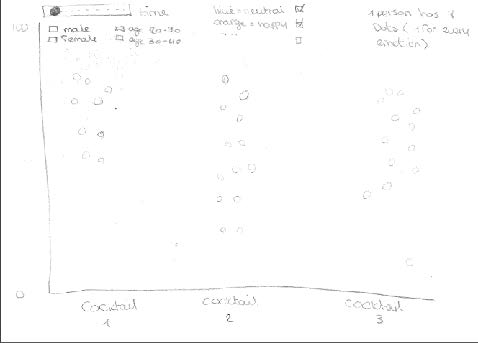
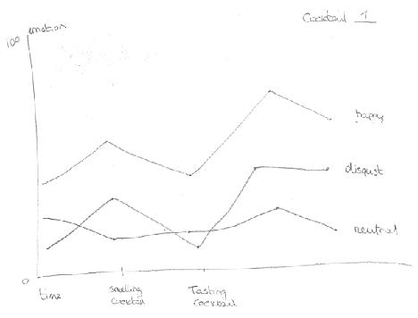
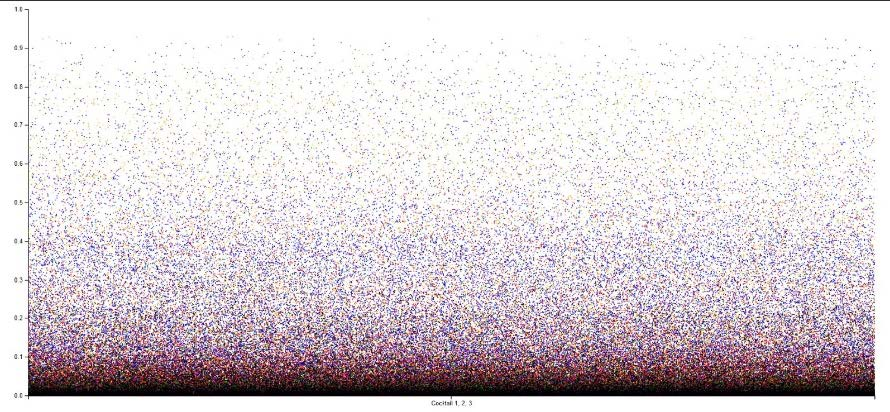
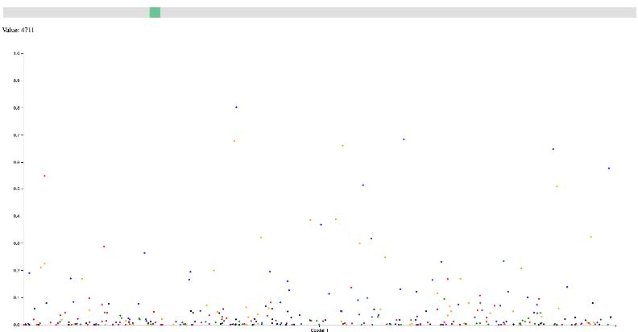
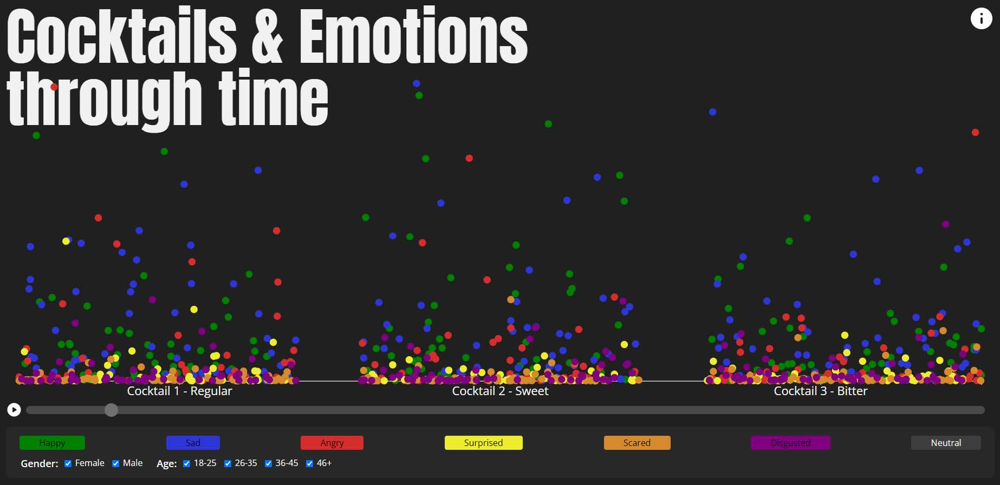

Paper
Download this paper
There is a strong connection between taste and emotion. Different flavours can evoke
different
emotional responses in people. For example, the taste of sweet foods can often trigger feelings of
happiness and contentment, while bitter flavours may trigger feelings of disgust. The sense of taste is
closely tied to the sense of smell, and the combination of these two senses can have a powerful
impact on how we experience food and drink, and how it makes us feel emotionally. Additionally,
certain flavours and aromas may be associated with memories or experiences, which can also
influence our emotional response to them.
This project is based on the FaceReader data gathering sessions at TestLab, which was initiated to
test out the FaceReader program and to investigate the link between tasting different flavours and
changes in emotions.
The aim of this assignment is to use the data collected in the previous study, which examined
consumer emotions in the tasting of cocktails. In this assignment, the presented data needs to be
analysed. As a result, solutions will be provided about how the data can be presented in a clear
manner to different audiences and to explain the results of this study by the means of visual artifacts.
This project will be executed within the parameters given by the minor Data Visualisation. The results
will consist of the following elements:
A portfolio where every step will be documented, and choices will be explained.
An interactive visualization of the data in the form of a website.
A poster presentation where the results of the project are presented.
A dataset of 57 respondents is available on a cocktail experiment, performed by the Research Center
Future of Food.
The data is collected by asking each participant to sit in front of a laptop. This laptop was
running the
FaceReader software which started recording once the process had been explained. Three samples of
cocktails, a glass of water to drink in between cocktails and a questionnaire were set in front of the
participants. The participants where then asked to sample each cocktail and fill out the questionnaire
about the flavors tasted and the emotions felt. The participant was thanked for their participation
and the FaceReader recording was stopped.
The FaceReader software produced per participant a dataset of 7 different emotions recorded every
33 milliseconds. Every emotion has a number ranging from 0 to 1 based on how strongly the
FaceReader software measured that emotion on the participants face.
The total number of participants were 56 numbered 2 to 27, this was done because the first session
was a trial conducted by the researcher to test the FaceReader software.
Filtering the data was a collaboration with 3 other project groups. This was necessary because of the
extreme large amount of data that was not necessary for this project and the desired visualization
but included in the dataset.
In the Excel document provided there were, depending on the length of the video, a number of rows
with measured emotions for every 33 milliseconds. In the video there were times where the
participant was smelling a cocktail, drinking a cocktail and writing down their experiences. The
emotions measured at the moments where the participant was writing, are not interesting for the
results in this project. By watching the videos individually, and writing down what time frames are
not interesting, it was possible to filter these rows of data out. In addition to this, timestamps
needed to be added to the data marking when a participant is smelling a specific cocktail (cocktail 1,
2 or 3), and when a participant is drinking a specific cocktail. This part of filtering the data was
done
with all the project groups, dividing the work made it possible to get the data within a few days
instead of a longer period.
To make the data even more usable for the specific need in this project, the faulty data was
removed. There were a few moments were the FaceReader was not able to read the emotions
correctly. Whether it came from the participant looking away or the reflection of glasses. This data
was deleted, giving a smaller but more correct output.
In the end, the “smelling a cocktail” and “drinking a cocktail” event markers were merged in a
“experiencing the cocktail” event marker. This was more suitable for the way the data is presented in
this project. More about the presentation of the data can be found in the chapter Result and
conclusion.
The agile work method will be used in this project. This means that every week there will be a recap
of what was done in the previous week, wat will be done in the next week, and if the project will
succeed if the process continues at the same speed.
In addition, feedback and support will be provided every Thursday by the teachers.
The general requirements of the project given by the client are as following:
Data needs to be visualized in a way that it is clear to the viewer what is presented.
Visualization needs to be made for a specific target audience.
Different visualizations made for different target audiences.
These are requirements that must be included in the project which means they create the scope
of
the project.
There were a few target audiences that needed to be addressed for the research. These were the
scientific audience, the consumers, the general public or others that could benefit from the results.
Every individual project group was allowed to make the choice of target audience for themselves but
taking into consideration the choices of others.
In the beginning of the project there were a few sketches made. These were not yet connected to a
specific audience. Gradually it became clear that the main idea in the sketches was targeted to the
scientific audience. In consultation with the client the decision was made to cater to the target
audience “scientific audience”. The choices form the other groups (3 other groups) were taken in
consideration. Luckily all the groups were divided among the other options. The sketches can be
found in the chapter Result and conclusion, and in the appendix.
After gathering a lot of information considering colors and the common use of them, the colors of
the emotions were set to specific values. The information was gathered from How a Film Color
Palette Can Make You a Better Filmmaker [W/ Infographics], 2023), (Risk, 2020), (Color Psychology:
The Emotional Effects of Colors, 2023), (Vetter, 2019) and (How Translating Colors Across Cultures
Can Help You Make a Positive Impact, 2020).
To start the decision for happy and angry was made. Based on the “green is good and red is bad”
theory, we picked green for the emotion happy and red for the emotion angry. After that, the color
grey was picked for the emotion neutral because grey represents neutrality. Next up, the emotion
sad needed to get a color. Blue often represents sadness or depression. Because of this, blue was
picked for the emotion sad.
Even though green often represents good, it could also represent the emotion disgusted. However,
we already chose green for the emotion happy. That is why we had to look for another color
representing disgusted. In addition to this, the emotions surprised and scared still needed to get a
color. With the theory that yellow, on some occasions, can represent happiness and being surprised
is not a negative emotion in the basis, yellow was picked for the emotion surprised. To get a color
palette that is pleasing to the eye, orange and purple were a good match to add to the existing
colors. These two colors were picked and distributed on instincts, because the articles were too
indecisive on these colors and emotions. Choosing purple for the emotion disgusted and orange for
the emotion scared was the best option.
After the first client meeting, the target audience that was going to be address was decided upon.
Because of this, the scope was limited to a couple of sketches that were going to be incorporated in
the final product. This was going to be some form of a scatterplot (Image 1. Sketch visualization
home page with filters and time slider), preferably with options to play through time, and a line
graph (Image 2. Sketch visualization emotions per participant per cocktail through time) showing
emotions through time.

Image 1. Sketch visualization home page with filters and time slider

Image 2. Sketch visualization emotions per participant per cocktail through time
The next step was to neutralize the data. As mentioned, this was done by combining effort with all
the other project groups. After the data was neutralized, the first iteration of the website could be
started. The first version consisted of a scatterplot (Image 3. First iteration scatterplot) where all
the
data was put into one big graph regardless of time, cocktail, or participant.

Image 3. First iteration scatterplot
Of course, this was totally unusable and impossible to read any kind of information from this
graph.
So, the next step was to filter the data based
on its time stamp and cocktail. Filtering on
the time stamp was more difficult than
anticipated. This was because not all users
drank and smelled each cocktail for the same
amount of time or at all.
There were a couple of routes that could be
taken. All the participants could pop in and
out of the graph when they were
experiencing the cocktail, or all the time could
be scaled. And the smelling and tasting of the
cocktail could be separated into different segments
or they could be grouped together. Because it was
the goal to visualize how the participants
experienced the cocktails through time, the choice
was made to scale the data to one length of the
slider and to group the tasting and smelling of the
cocktail together. This was accomplished with some
slight alterations in the dataset. This also results in
that the program visualizes every participants’
actions in chronological order, no matter if they tasted or smelled the cocktail first (Image 4. Second
iteration scatterplot).

Image 4. Second iteration scatterplot
After scaling, filtering, and adding a time slider, the scatterplot started to take some shape. The
filtering of the data by user based on emotion, gender and age range was added as well as an
automatic play function.
The goal was to also add a more detailed line graph view per participant. This way, the emotions of
each individual participant could be viewed through time. To accomplish this, functionality was
added to the scatterplot where a user could hover their mouse over a dot. This creates a box where
more information about that dot is shown like the participant it belonged to and the age of the
participant. Users could also click on each dot to go to another page. On this page a line graph was
created for a more detailed view. This graph includes a legend for each emotion, but no further
filtering options.
At this point, the design of the website was changed to something that looks professional yet
resembles the subject of the study. The final colors were also chosen. These still follow the results of
the color decision research but were slightly altered to be less harsh to look at and to generally look
more pleasing.
Because there was some time left and it felt like this was an important part of the research, the
decision was made to add a bar chart to the website. This shows the average emotion from all the
participants per cocktail. Explanatory text was also added as well as an about page.
The final result is a complete website with scientific oriented visual representations of the results
from the TasteLab research. On the first screen the user is immediately presented with the
interactive scatterplot visual which automatically starts playing (Image 3. Website homepage).
Beneath the visual there are several filtering options and an explanatory text about the visual. At the
bottom of the page is a bar chart with average emotions per cocktail. If a user interacts with the
scatterplot visual, they are sent to another page with a more detailed view from that participant. At
the top right of the first page, there is an information button which sends the user to a page
containing more details about the project.

Image 5. Website homepage